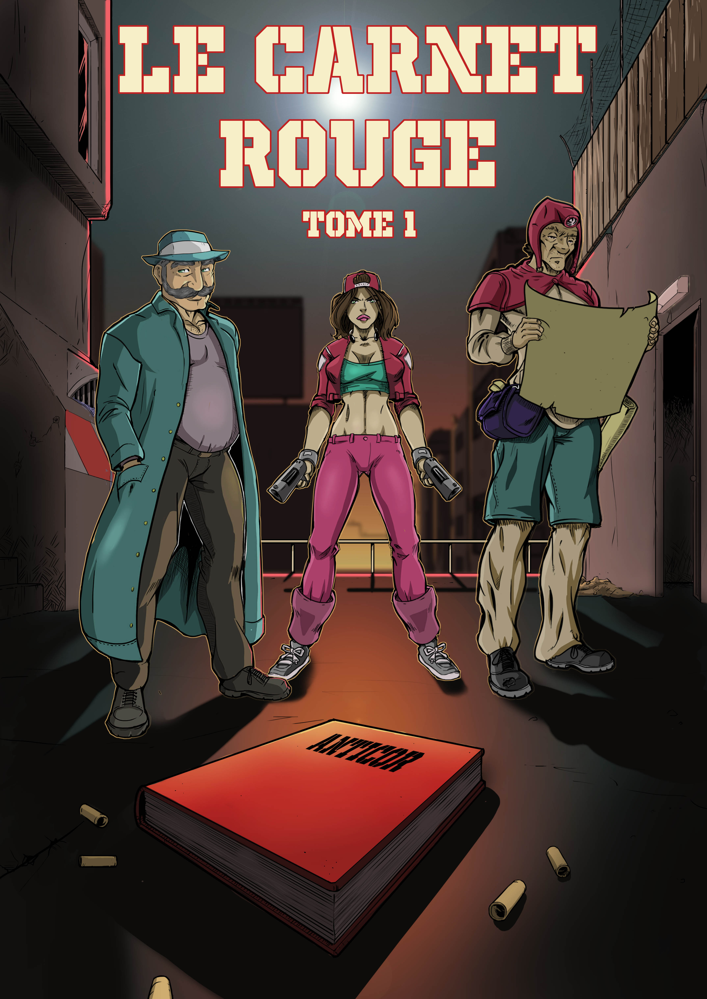
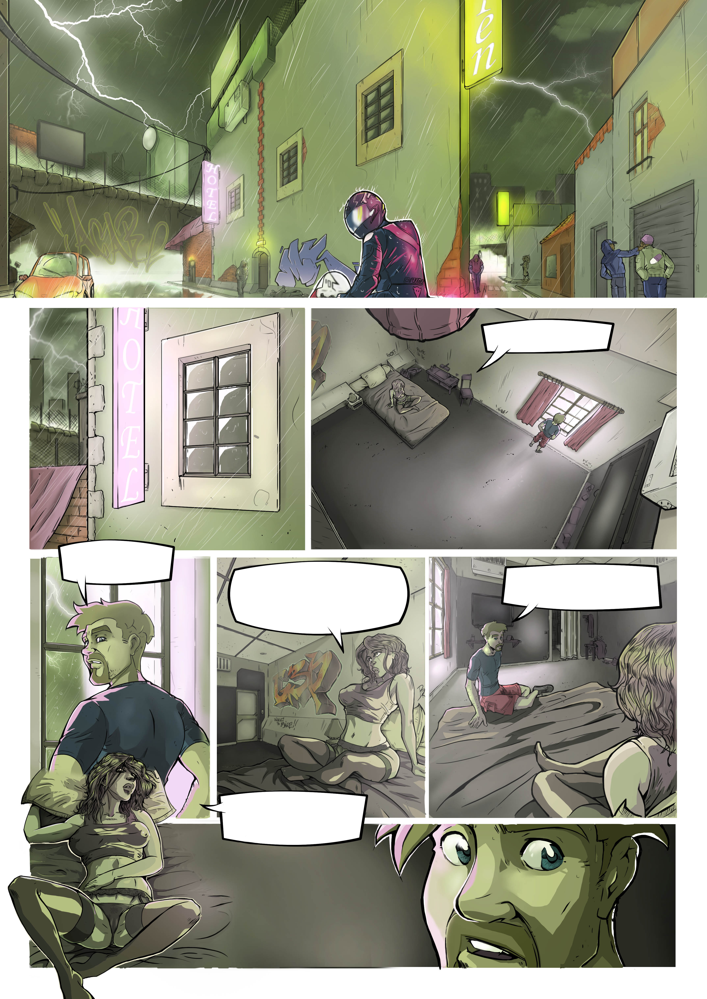
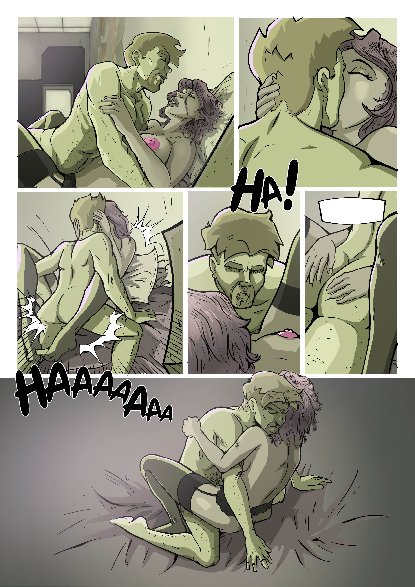
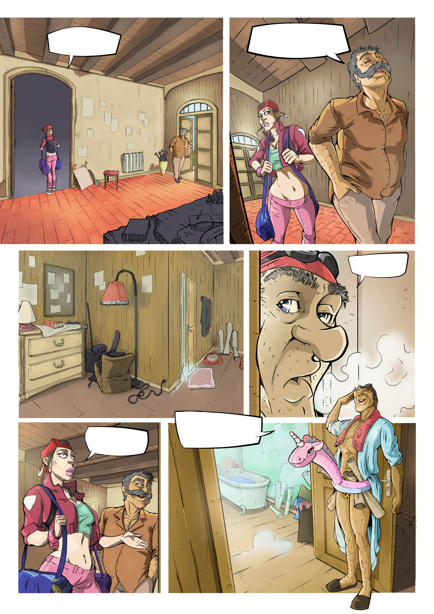
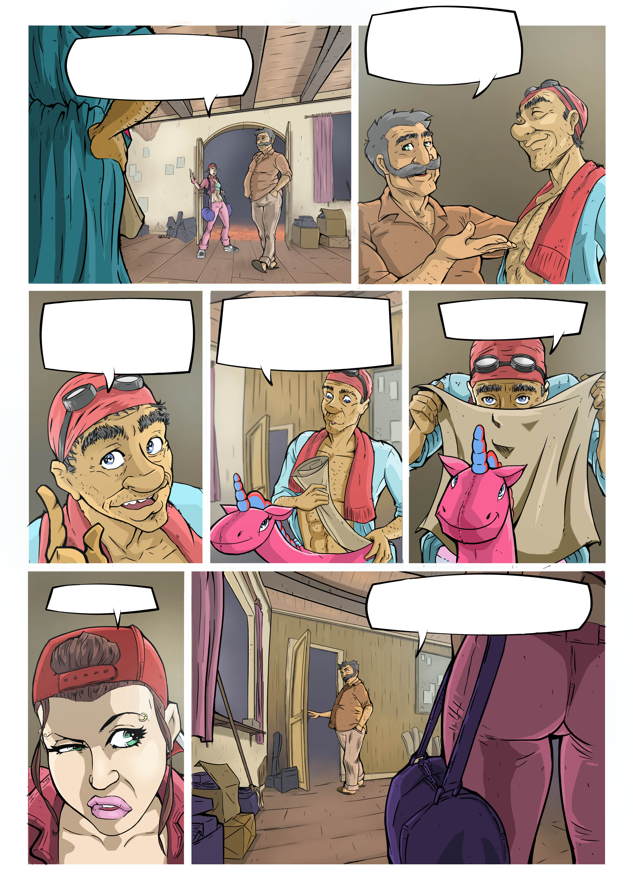
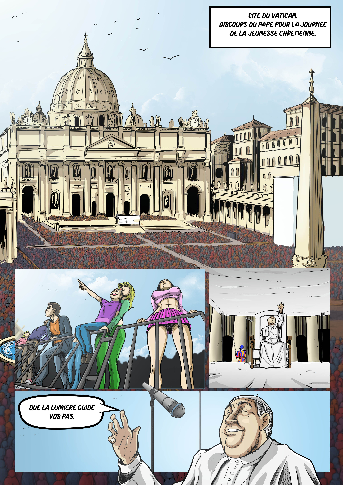

Les planches
Voici une sélection de planches issues de la bande dessinée. Cliquez sur une miniature pour ouvrir le diaporama.






Tome 1 : Les Disparus
Dans un monde où la justice n’est qu’une façade et où les puissants réécrivent la vérité à leur convenance, Emma Sterling tente de survivre à une existence qui s’effondre.
Depuis l’enfance, elle a vécu dans la fuite permanente, ballotée de ville en ville par des parents qui ne lui ont jamais expliqué ce qu’ils fuyaient. Leur mort dans un accident suspect la laisse seule, brisée, et rongée par une colère qu’elle ne sait plus contenir.
Une nuit, dans une chambre d’hôtel, cette colère explose.
Un acte irréfléchi, une arrestation immédiate, et la chute commence.
Mais lors de son identification, un test ADN déclenche une alerte que personne n’attendait.
Emma n’est pas une inconnue : elle est la fille d’un couple autrefois lié à ANTICOR, un groupe dissident éradiqué vingt ans plus tôt.
Un couple que l’État pensait mort sans descendance.
Un couple dont le nom est encore murmuré dans les couloirs du pouvoir.
Transférée vers une juridiction spéciale, Emma découvre qu’elle a un oncle : Joseph Steed, détective privé réputé, mais brisé par l’alcool et par la disparition de son frère.
Steed n’a jamais su qu’il avait une nièce.
Il n’a jamais pardonné à son frère d’avoir rejoint ANTICOR.
Et il n’a jamais cessé de porter la culpabilité de ne pas avoir pu le sauver.
Le juge chargé de l’affaire, figure corrompue d’un système qui étouffe toute vérité, propose à Steed un marché :
la liberté d’Emma en échange d’une enquête qu’il a toujours refusée.
Steed dit non.
Jusqu’à ce que les fantômes du passé le rattrapent.
Avec l’aide de La Carte, un allié insaisissable qui connaît les entrailles de la ville mieux que quiconque, Steed finit par accepter.
Emma est libérée, mais la rencontre entre l’oncle et la nièce est glaciale.
Deux inconnus liés par un passé qu’on leur a volé.
Deux survivants qui n’ont plus rien à perdre.
Ensemble, ils découvrent que les parents d’Emma n’étaient pas seulement des fugitifs :
ils protégeaient un secret capable de faire trembler l’élite mondiale.
Un secret enfermé dans un objet disparu, connu sous le nom de Carnet Rouge.
Ce premier tome suit la naissance fragile d’un trio improbable, soudé par la perte, la rage et un besoin viscéral de vérité.
Au fil des pages, l’enquête se transforme en lutte pour la survie, et la survie en quête de justice.
Car dans l’ombre, quelqu’un les observe.
Quelqu’un sait qu’ils se rapprochent de ce que l’État a passé vingt ans à effacer.
Et lorsque les flammes s’abattent sur la maison de Steed, une certitude s’impose :
le passé n’est pas mort.
Il revient réclamer ce qui lui appartient.
Voici une sélection de planches issues de la bande dessinée. Cliquez sur une miniature pour ouvrir le diaporama.
Voici une sélection de personnages issus de l’univers du Carnet Rouge. Cliquez sur une miniature pour ouvrir le diaporama.